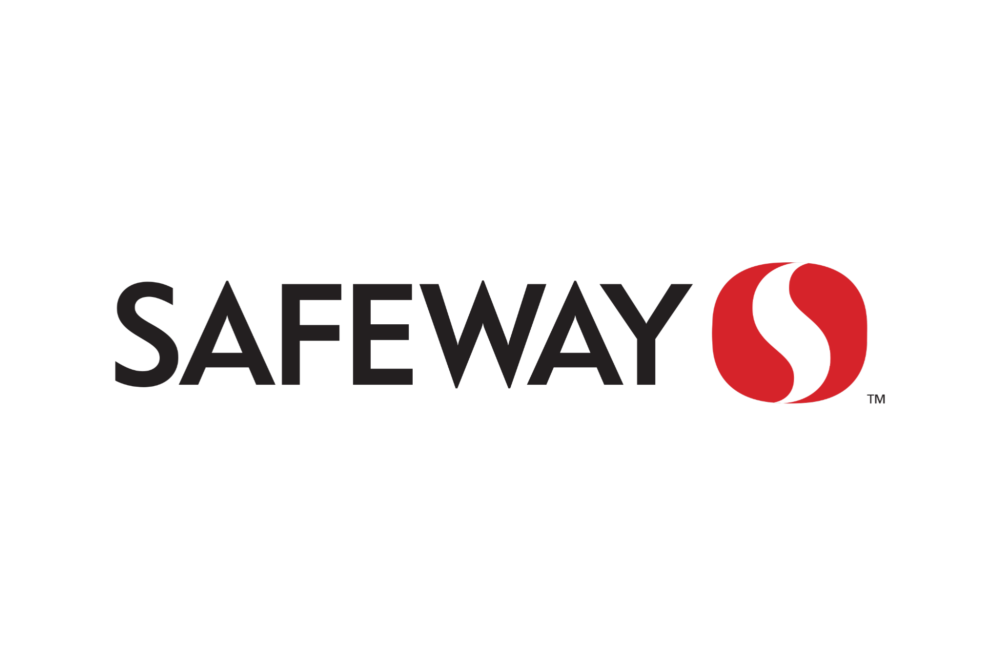
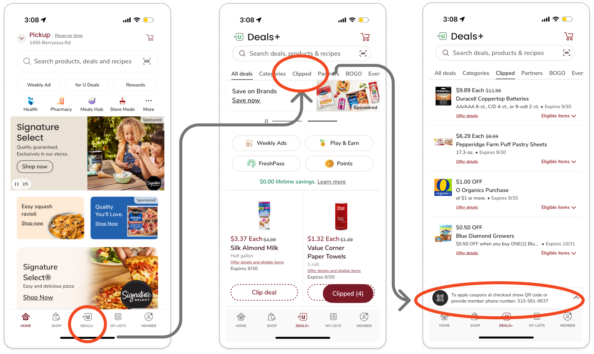
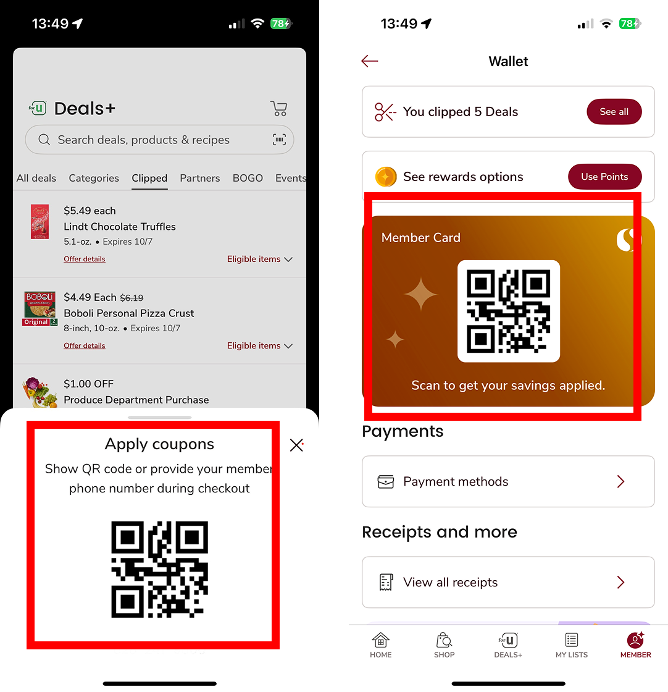
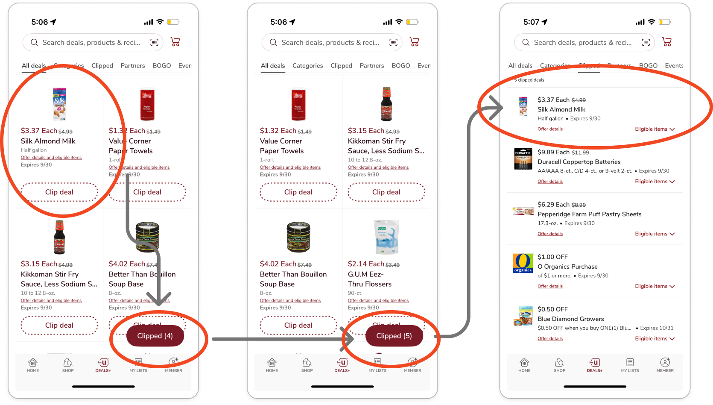
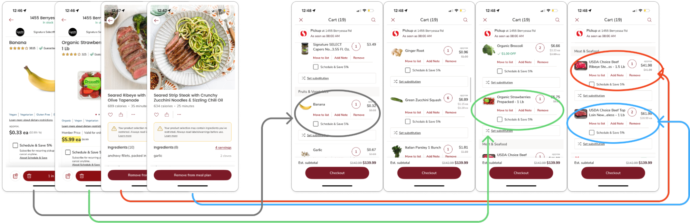
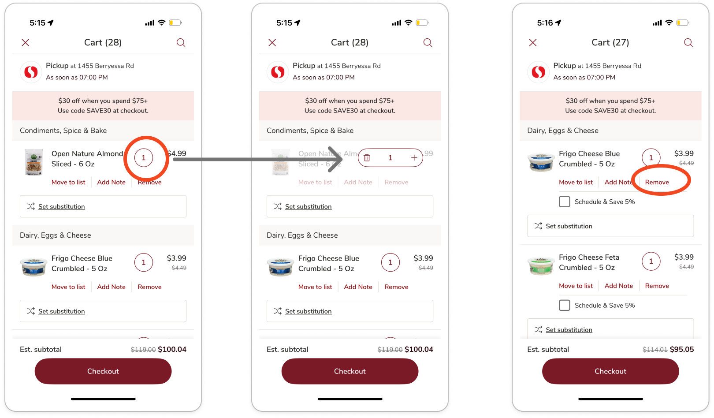
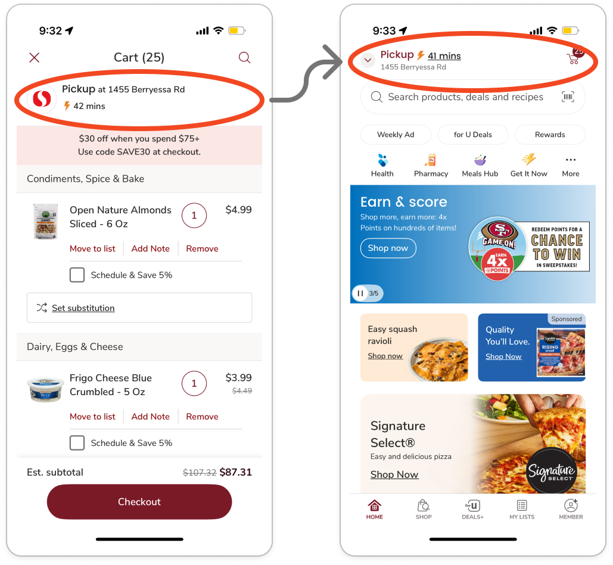
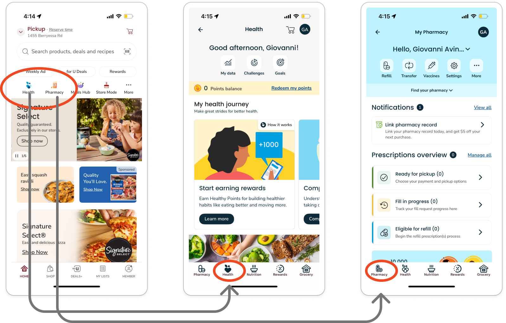
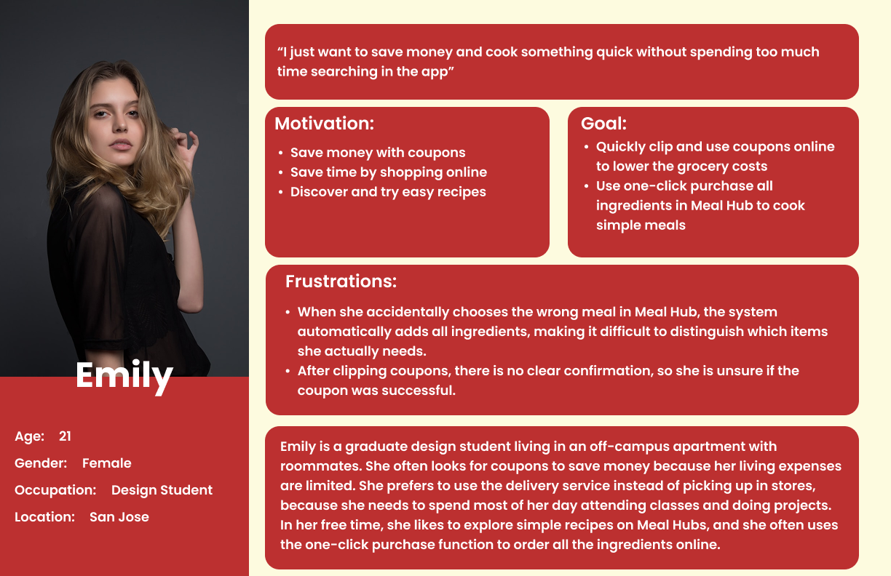
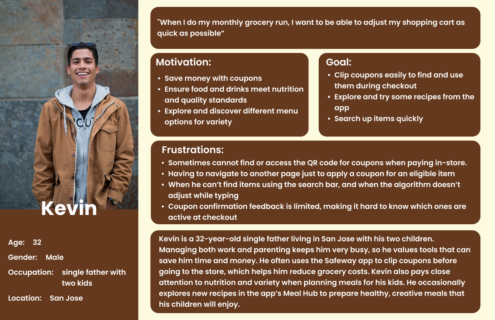

Redesigning the Safeway Mobile App
A two-phase project: Phase 1 evaluated the existing app and synthesized insights; Phase 2 turned those recommendations into a redesign, re-tested with users.

Evaluation & Insights
Overview
This project focused on evaluating and redesigning the Safeway mobile app to improve key grocery shopping experiences. We began with a heuristic evaluation and competitive analysis to identify potential usability issues and understand how similar grocery apps support common tasks.
We then conducted usability testing to examine how users interacted with core features, including coupons, the shopping cart, and the member card. Findings from the research informed our redesign and final design recommendations.
Problem Statement
The Safeway app supports a wide range of grocery shopping tasks, but its complex interface can make common actions less intuitive and efficient. This project aimed to identify usability barriers within key shopping flows and explore opportunities to create a clearer and more seamless experience.
Research & Evaluation
Seven prioritized findings, each documented with annotated screens, the guidelines they violate, and a corresponding recommendation.
01 Priority 1 Rewards QR code is buried at checkout +−

Assessed Issue & Guidelines / Principles Review
The rewards QR code to apply coupons for in-person purchases (Figure 1) is difficult to find. Users must dig into the app at checkout to ensure they receive their discounts and points. Couponing and rewards systems are a primary function of many grocery apps.
Violation of Fitts’ Law: The UI element is small and placed at the bottom of the screen. Scanning rewards should be larger and quicker to access.
Strive for Consistency: The app does not demonstrate consistency in making one of its primary features prominent, unlike its competitors.
Figure & Ground: The barcode is visually minimized at the bottom, so it does not appear to be the main object of attention.
Recommendations
Make the rewards QR barcode more visually prominent so users can easily recognize and identify the feature.
Elevate its placement in the menu hierarchy to ensure quick access at checkout, reducing frustration, time on task, and unnecessary clicks.
02 Priority 1 Two QR codes in different places for the same function +−

Assessed Issue & Guidelines / Principles Review
This app displays two QR codes in multiple locations (Deal page and Wallet) but serves the same function, which is to apply coupons. The visual treatment and the contexts differ, which may confuse users into thinking they are separate features. (Figure 2)
Consistency: This design violates the principle of consistency by displaying the member QR code on different pages with different visuals and contexts. Although both serve the same function, the inconsistent display makes users think they are different features, leading to confusion.
Reduce Short-Term Memory Load: Users must remember at least one path to access this QR code. Instead of visually surfacing a direct entry point, this design increases memory demand. During checkout, users need a fast and stress-free way to access the QR code.
Recommendations
Move the QR code from the Wallet to the Member page, so users can access it with fewer clicks and without switching between multiple pages.
Unify the visual design and context of the QR code across the app to ensure users clearly understand it is the same function.
03 Priority 1 Clipping a coupon gives no confirmation or next step +−

Assessed Issue & Guidelines / Principles Review
When users clip coupons, the process creates uncertainty and confusion, disrupting their shopping experience (Figure 3). The system does not provide clear feedback to confirm that a coupon has been successfully added.
Offer Informative Feedback: The interface fails to notify users when their action is completed, leaving them unsure if the coupon was clipped.
Recognition Rather than Recall: Users must remember how many coupons they had clipped before in order to notice the counter update. Without explicit confirmation, they cannot easily recognize that the action was successful.
Design Dialogs to Yield Closure: Clipping a coupon is only the first step in obtaining discounts, yet the system provides no guidance or sense of completion to help users understand what comes next.
Recommendations
Provide clear, immediate feedback when users tap “Clip Deal” by displaying a confirmation state.
Surface a contextual next step to guide users through the couponing process.
04 Priority 1 Cart mixes à la carte items with meal plans +−

Assessed Issue & Guidelines / Principles Review
Identifying items in the shopping cart increases cognitive load and frustration for users when they add both à la carte items and meal plans (Figure 4).
Reduce Short-Term Memory Load: The design forces users to hold in memory which ingredients belong to which meal, instead of showing it visually. This is especially problematic when some plans include 8+ ingredients, exceeding the limits of short-term memory.
Gestalt Principle of Proximity: The cart groups items by type (grains, fruits & veggies, meats), which misrepresents the mapping users expect. Based on their previous actions, users anticipate seeing items grouped by à la carte selections or by meal plan.
Error Prevention & Flexibility and Efficiency of Use: Users may accidentally remove the wrong item from a meal plan or à la carte selection due to the confusing organization. There is also no efficient way to manage meal plans within the cart; users must backtrack to identify items manually or restart the entire process.
Recommendations
Introduce a tabbed view that allows users to toggle between à la carte items and meal plans. This layered organization preserves the existing grouping by type while adding a higher-level distinction that aligns with user expectations.
By surfacing meal plans as clear groupings, users can more easily manage, review, or remove items without unnecessary cognitive load.
05 Priority 2 Quantity control lacks affordance +−

Assessed Issue & Guidelines / Principles Review
The quantity adjustment control (Figure 5) is represented only by a numeral, which lacks clear affordance.
8 Golden Rules of Interface Design: Strive for Consistency is violated by failing to follow standard UI patterns for quantity adjustment. Prevent Errors is also violated, as the remove button is placed very close to the quantity control, increasing the risk of accidental item deletion.
Gestalt Principle of Proximity: The placement of the remove button directly beneath the quantity control visually groups them, implying a functional relationship that does not exist and potentially misleading users.
Recommendations
Replace the standalone numeral with clear quantity adjustment controls, such as + / – buttons, to align with established interaction patterns and affordances.
Integrate an X icon for item removal or a checkbox to support multi-item deletion. This reduces ambiguity, prevents errors, and creates a more intuitive and efficient cart management experience.
06 Priority 2 Store address cannot be changed from the cart +−

Assessed Issue & Guidelines / Principles Review
Users cannot change the store address directly from the shopping cart. Clicking the address redirects them to the home screen, forcing them to adjust the address there and then navigate back to the checkout (Figure 6). This workflow inefficiency violates several of Nielsen’s heuristics and one of the golden rules.
User Control & Freedom: Users are unable to change the store address directly in the cart view, so they are forced to leave the checkout flow, adding unnecessary steps.
Flexibility & Efficiency of Use: Changing store location is a common action in a shopping experience. Instead of having the functionality accessible at any moment, users have to backtrack to proceed with the action.
Cater to Universal Usability: The system fails to design for a wide range of users. Shoppers who are new or under time constraints will become frustrated and possibly abandon their shopping goal at checkout.
Recommendations
Enable users to update their store location directly within key points of the checkout flow. Providing in-context address controls ensures a seamless shopping experience, reduces unnecessary navigation, and supports task completion without disruptions.
07 Priority 3 Health and Pharmacy icons are redundant +−

Assessed Issue & Guidelines / Principles Review
The Health and Pharmacy icons (Figure 7) are redundant, as they lead users to the same destination, differing only by a tab.
Violation of Consistency & Standards: Users expect different functionalities from different icons. Having Health and Pharmacy direct to the same page creates confusion and breaks consistency.
Aesthetic and Minimalist Design: Redundant entry points increase complexity and add unnecessary clutter to the interface.
Similarity: Users naturally group elements they perceive as alike. Here, the icons break expectations by presenting visual differences that do not correspond to functional differences.
Recommendations
Consolidate the functionality into a single icon and relabel it as Wellness, creating a unified entry point that clearly represents both pharmacy and health services.
We compared Safeway with Whole Foods and Walmart to understand how similar grocery apps organize key shopping features and support common user tasks.
Whole Foods provides quick access to its in-store QR code through the Home screen, while Walmart uses clearer navigation and more structured product organization. In comparison, Safeway offers strong features such as digital coupons, meal planning, and shopping lists, but several key functions require more navigation or lack clear interaction feedback.
The comparison highlighted opportunities for Safeway to improve feature discoverability, navigation clarity, and interaction consistency.
Usability Testing
Based on our initial evaluation, we defined four usability goals to guide the study:
To investigate these goals, we focused on three research questions:
How effectively can users find, clip, and apply coupons, then locate eligible items to add to their cart?
What challenges do users encounter when managing individual items and meal-plan items in their cart?
How easily can users access their member card for in-store scanning, and how does the experience affect their overall satisfaction?
We conducted usability tests to further evaluate the Safeway app across three core experiences: applying a coupon, managing the shopping cart, and accessing the member card. Participants were asked to think aloud while they performed the tasks.
The following usability performance measures were utilized to focus on our key goals — effectiveness, efficiency, and ease of use. The team also collected qualitative data during the sessions to build a comprehensive understanding of each participant's experience with the app.
Quantitative
Task Completion Time: Time the participant took to complete the task.
Completion Success: Whether the participant successfully completed the task.
Error Rate: Each tap or click the user made that was not directed toward the goal.
Number of Clicks: Amount of clicks the participant made to complete the task.
Qualitative
Subjective: Think-aloud feedback and verbal responses to the team’s perception-probe questions during and after each task.
Behavioral: Facial expressions, body language, and other nonverbal cues.
You downloaded the Safeway app to find good deals on groceries. Find any coupon you want to use and successfully apply it.
You’re shopping for groceries in the Safeway app and added 1 à la carte item and 2 meal plans (ribeye and seared strips). When reviewing your shopping cart you realize you’re over budget. Successfully remove 1 of the meal plans from your cart.
You went in person to do shopping at Safeway. You remembered you clipped a coupon and want to make sure you get your points and discounts. Find your member card.
Two personas grounded the study in the shoppers we were designing for.


Ten participants with a mix of Safeway and comparable grocery app experience, recruited across a range of shopping habits and frequencies.
To complement our usability testing, we surveyed 25 Safeway users to better understand their shopping behaviors, feature usage, and common pain points. The survey reinforced the importance of coupons as a core part of the Safeway experience while highlighting recurring friction around search, coupon interactions, cart management, and feature discoverability.
Users valued Safeway primarily for deals and coupons, but unclear feedback, repetitive interactions, and difficulty locating key features created friction across common shopping tasks.
Most participants completed the coupon task successfully, but the flow required too many steps and created uncertainty about what to do after clipping a deal.
Shopping cart management created the most friction. Participants frequently backtracked, struggled to distinguish meal-plan items from individual items, and experienced cognitive overload when trying to remove specific products.
The member card was the easiest task, but several participants felt its location in the Wallet did not match their expectations and could be more discoverable.
Redesign Recommendations
Based on the usability evaluation and overall findings, we identified several opportunities to improve the Safeway app and reduce friction across key shopping tasks.
Provide informative feedback: Give users clear, immediate confirmation after they tap “Clip Deal,” such as a “Successfully Clipped” state.
Create a clearer next step: After a coupon is clipped, change the button from “Clip Deal” to “Shop Deal” to communicate completion and guide users toward eligible products.
Improve affordance: Replace the standalone quantity number with familiar + / – controls.
Make item removal easier: Add a clear remove action, such as an X icon or multi-select option, to make cart management more efficient.
Keep users in control: Allow users to change their selected store directly from the shopping cart to reduce unnecessary backtracking.
Improve system visibility: Provide immediate feedback about product availability so users can make decisions earlier in the flow.
Separate meal plans from individual items: Use clearer grouping or tabs to help users understand and manage nested meal-plan items.
Move the member QR code to the Member section: Place the QR code in a more intuitive and accessible location instead of requiring users to navigate through the Wallet.
Create a consistent QR card experience: Standardize the visual design and context of the QR code across different parts of the app.
Improve search flexibility: Support partial matches and predictive suggestions to help users find products more efficiently.
Provide immediate feedback: Use messages such as “No exact matches found” or “Did you mean…?” to guide users when search results are unclear.
Phase 1 Summary
The first phase of the study identified Safeway's core usability challenges, including unclear feedback, inefficient task flows, and inconsistent interface patterns.
By combining interface evaluation, usability testing, and survey findings, we identified opportunities to improve clarity, efficiency, and user control across key shopping experiences. These insights informed the redesign in the next phase of the project.
Redesign & Validation
Redesign
Guided by the recommendations, we redesigned the Safeway app's coupon, cart, member card, and search experiences into a high-fidelity prototype.

Validation Usability Testing
To evaluate whether the redesigned experience addressed the issues identified in Phase 1, we conducted a second round of usability testing using the redesigned prototype.
We followed the same overall testing procedure and usability metrics, with minor adjustments to the task scenarios to reflect the redesigned flows.
Eight participants tested the redesigned prototype, recruited from a similar mix of Safeway and comparable grocery app users across a range of shopping habits and frequencies.
You downloaded the Safeway app to find good deals on groceries. Find any coupon you want to use and successfully apply it.
You’re shopping for groceries in the Safeway app. You need some à la carte items and want to try one of their meal plans from the meal hub. Add 1 à la carte item and 2 meal plans: a banana, the Almond-Crusted Turkey Patties with Garlic Green Beans, and the Cilantro Lime Chicken Thighs. Let me know when you have added them to your cart.
You went in person to do shopping at Safeway. You remembered you clipped a coupon and want to make sure you get your points and discounts. Find your member card.
Phase 2 Summary
The validation study showed clear improvements across all three redesigned flows. Participants completed every task successfully with substantially less time, fewer interactions, and fewer errors.
The second round also revealed smaller usability issues around feedback, control visibility, and icon clarity, providing direction for further iteration.
Conclusion
The study found that Safeway’s core usability challenges were driven by unclear feedback, inefficient task flows, and inconsistent interface patterns. By combining interface evaluation, usability testing, and survey findings, we identified opportunities to improve clarity, efficiency, and user control across key shopping experiences.
In future research, we would conduct a cognitive walkthrough to further examine the learnability of key tasks and strengthen our understanding of users’ decision-making processes.
Key Takeaways
References
Nielsen, J. (2024, January 30). 10 usability heuristics for user interface design. Nielsen Norman Group.
Moallem, A. (2025). Gestalt (p. 12). San Jose State University.
Moallem, A. (2025). Theories Model (p. 42). San Jose State University.
Moallem, A. (2025). Affordances (pp. 7–15). San Jose State University.